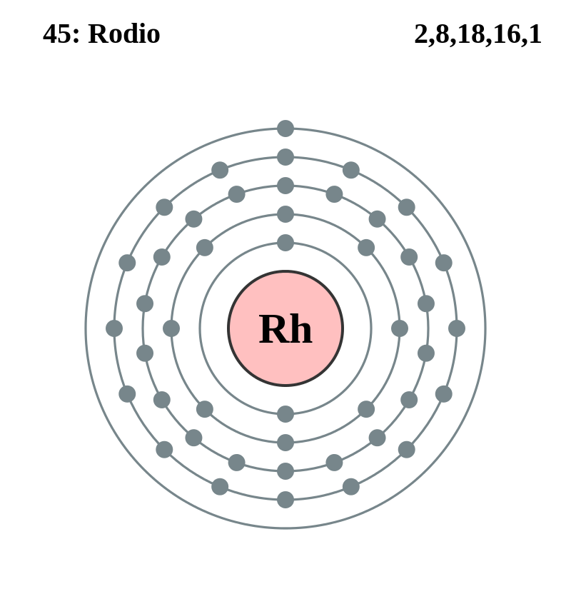

|
|
||
|
Rodio Es de color blanco plateado y cambia lentamente al sesquióxido cuando se calienta expuesto al aire y vuelve a convertirse en elemento a temperaturas más altas. Es altamente reflectante, duro y resistente. El rodio se usa principalmente en aleaciones para endurecer el platino y el paladio, que luego se usan para hornos, elementos de termopares, aisladores, bujías para aeronaves y crisoles de laboratorio. Es resistente a la corrosión y su baja resistencia eléctrica lo convierte en un buen material para contactos eléctricos. El rodio también se utiliza como catalizador en instrumentos ópticos, así como para joyería y decoración. |
 |
DATOS Número Atómico: 45 Peso Atómico: 102.9 Electronegatividad: 2,28 Configuración Electrónica: 4d8 5s1 Estados de Oxidación: +3,4,6 No. de Electrones de Valencia: 9 |